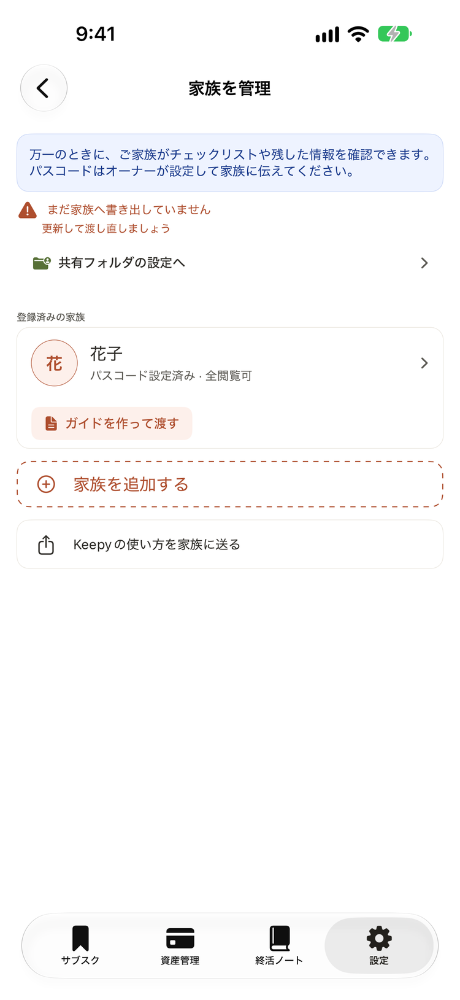
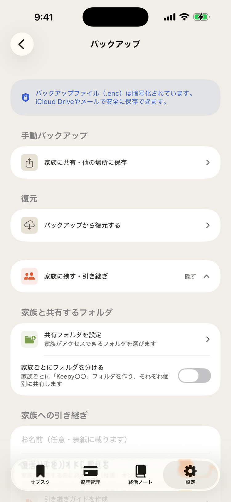
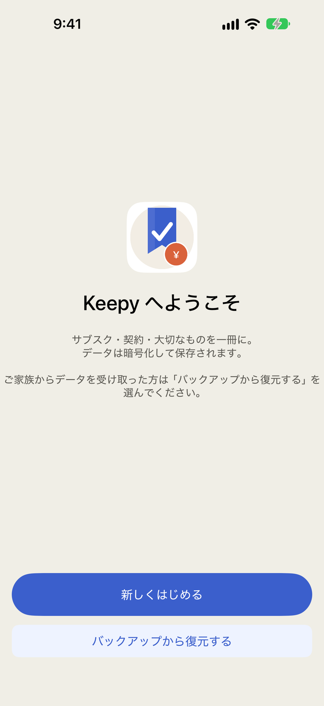

いちばん大事なこと：共有を忘れない
オーナーが共有フォルダを家族に共有し忘れると、いざというときご家族がデータにアクセスできません。初回にSTEP 3 の共有まで必ずやり切ってください。
家族への引き継ぎ設定ガイド
下の5ステップを初回に済ませておけば、もしものときご家族が新しい端末でデータを復元し、手続きに必要な情報にたどり着けます。終わったら、最後の「これで完了」の確認で見直してください。
STEP 1
家族を登録する
設定の「家族を管理する」→「家族を追加する」から、引き継ぐご家族を登録します。

STEP 2
共有するフォルダを作り、Keepy で選ぶ
① フォルダを作る：「ファイル」App の「ブラウズ」→「iCloud Drive」で、右上の「⋯」→「新規フォルダ」から作ります（例：家族への引き継ぎ）。
iCloud Drive には、あなた自身のバックアップの置き場として「Keepy」というフォルダがあります。取り違えないよう、それとは別の名前にしてください。
② Keepy で選ぶ：設定の「バックアップ」→「家族と共有するフォルダ」の「共有フォルダを設定」を押し、①で作ったフォルダを選びます。
③ 分けるかを、ここで決める：同じ画面の「家族ごとにフォルダを分ける」です。共有する前に決めておくと、あとで共有をやり直さずに済みます。

STEP 3
家族にフォルダを共有する
「ファイル」App でフォルダを、引き継ぐご家族と共有します。この共有を忘れると家族が締め出されますので、必ずここまでやり切ってください。

STEP 4
最初の1回を書き出す（そのあとは自動）
あなたがやること（最初の1回）：設定の「バックアップ」で「今すぐバックアップを書き出す」を押します（iCloud Drive が使えない端末でこのボタンが無いときは「家族に共有・他の場所に保存」）。共有フォルダに暗号化バックアップ（.enc）と引き継ぎガイド（PDF）が書き出されます。まだ復活カギが無ければ、このときに発行されます。
そのあとは自動：記録の内容が変わると、Keepy を離れたとき（ホーム画面に戻ったときなど）に、共有フォルダの中身が書き直されます（「iCloud Driveに自動保存」を止めていなければ）。

STEP 5
ご家族がアプリで復元する
もしものとき、ご家族は共有フォルダの暗号化ファイルと復活カギ（8語）を使って、新しい端末の Keepy にデータを復元します。あとはロック画面の「ご家族はこちら」から、家族用パスコードで家族モードに入れば、手続きに必要な情報が揃います。
ご家族の手順は、引き継ぎガイド（PDF）の「引き継ぐ手順」に載っています。入ったあとの画面はマニュアルの「家族モード」をご覧ください。

これで完了（確認リスト）
次の6つがそろっていれば、引き継ぎの準備はできています。
- 家族を登録し、家族用パスコードをご家族に伝えた（STEP 1）
- 設定の「バックアップ」で「家族に残す・引き継ぎ」の「表示」を押すと、選んだ共有フォルダの名前が出ている（STEP 2）
- ご家族が参加依頼を承諾した。分けているときは、全員の「共有した」を押した（STEP 3）
- 「今すぐバックアップを書き出す」（無いときは「家族に共有・他の場所に保存」）を1回押した（STEP 4）
- 「ファイル」App で共有フォルダ（分けているときは「Keepy○○」フォルダ）を開くと、「keepy_backup.enc」と「keepy_引き継ぎガイド.pdf」が入っている。見当たらないときは、いったん Keepy を離れてから、もう一度開いてください
- ガイドに復活カギを載せない設定にしたときは、復活カギを別の方法でご家族に渡した
困ったときはサポートのよくある質問をご覧ください。